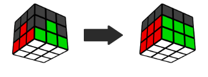
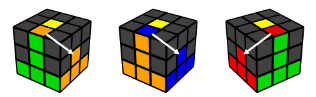
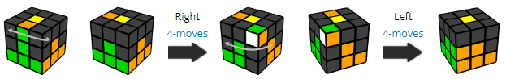
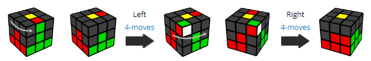

Second layer

Find an edge piece in the top layer without yellow as either of its 2 colors.
Turn the top so that it matches a center.
Face the piece and check if the top color matches the right center or left center.

If it matches the right side, do the following moves:

How to memorize this algorithm:
- Turn the top with your right hand
- Do the right 4-moves
- Rotate the cube to face the right side
- Do the left 4-moves
If it matches the left side, do the following moves:

How to memorize this algorithm:
- Turn the top with your left hand
- Do the left 4-moves
- Rotate the cube to face the left side
- Do the right 4-moves
Repeat this until all of the 2nd layer edges are solved.
If an edge you are looking for is stuck somewhere in the 2nd layer, move any edge into its spot using one of the 2 algorithms above. This will cause the edge to come out into the top layer. The example solve video above shows how this is done.